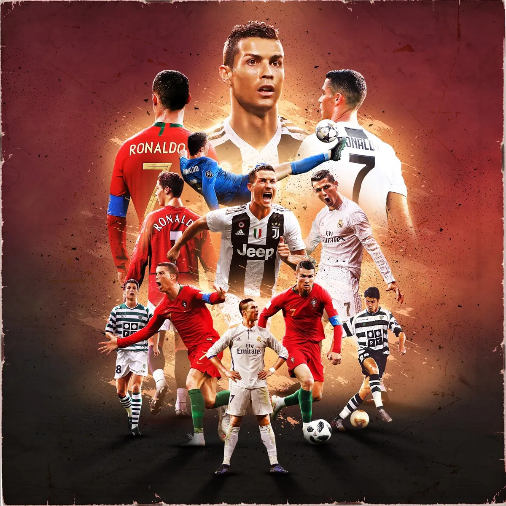

This is a website on 3 of my favourite things. (Obviously I have more favourite things than these 3.)
I love playing sports but my favourite sport out of all of them is soccer (I personally think it should be called football because thats the original name it had when it was created). The intensity, skill, and coordination needed with other people are all things that make this game extremely fun. Along with being in love with the sport, I also love watching it too.
Since I love watching soccer I have a favourite soccer player. This player is Cristiano Ronaldo. He is one of the best players in the world and to ever exist. He is also my idol since he had a very hard life when he was younger but still rose to become one of the best.

Some other soccer players I like are:
Along with sports I also like playing video games, my favourite video game being Minecraft. The endless possibilities of things that you can do along with the different ways you can do things makes it a very fun game. My favourite part is the multiplayer function where you can play with other friends in the same world which enhances the fun experience.